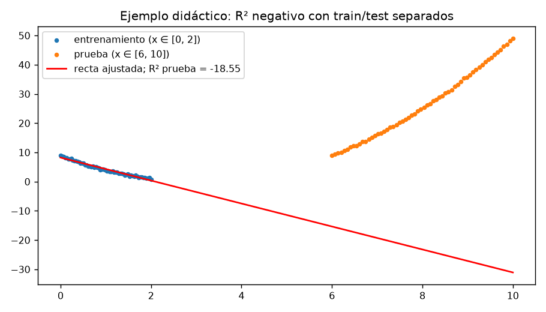

El profesor director requirió: (i) los cuadernos de análisis; (ii) trazabilidad de datos y decisiones; (iii) el código real de los algoritmos; (iv) aclarar qué se predijo en cada experimento pese a las dudas sobre la variable de respuesta; y (v) explicar los R² negativos y bajos del software. Este informe responde con evidencia reproducible, sin presentar un nuevo modelo definitivo.
data/raw/interseccion_terrenos_zhg_r1_yacopi.csv (9.447 filas × 17 columnas;
avalúo, áreas, zonas ZHG) y data/raw/zhf_yacopi.csv (7.968 × 28; ZHF, CLC,
coordenadas). Hashes SHA-256 y procedencia en data/raw/data_manifest.json.
Fecha y vigencia de avalúos: no documentadas (pendiente con el docente).
Normalización de nombres y códigos → deduplicación (3 filas idénticas de
intersecciones; 47 sobrantes ZHF) → unión por predio (7.694 con coincidencia;
15 solo intersección; 227 solo ZHF) → consolidación 1 fila/predio
(7.709 predios) → banderas de calidad (1.601 multizona; 4.924 con
|ZHF−catastral|>5 %; 46 áreas ≤100 m²; 3.033 con construcción). Código:
scripts/preparar_datos.py, scripts/build_db.py,
scripts/audit_data.py.
| Experimento | Y | Construcción | n | Estado |
|---|---|---|---|---|
| exp-proxy-001 (Fase 2) | avalúo catastral TOTAL/ha (incluye obra) | proxy | 7.694 | histórico |
| exp-zhg-001 (Fase 5) | referencia ZHG zonal (11 valores) | solo zonas conocidas | 7.709 | rechazado |
| exp-zhg-001-ponderado | valor zonal ponderado (651 valores) | ídem | 2.785 | rechazado |
| exp-zhg-001-demo | referencia ZHG (sin evaluación independiente) | ajuste a todos | 7.709 | demo off |
| exp-valor-terreno-001 A | VALOR_AVALUO×10000/AREA_TERRENO (COP/ha) | construcción = 0 | 4.676 | experimental |
| exp-valor-terreno-001 B | ídem | 0 < construcción ≤ 32 m² | 986 | experimental |
| Oficial | valor exclusivo de suelo validado | — | — | 503 pendiente |
Archivos reales: ml/src/yacopi_ml/models.py (Fase 2) y
ml/src/yacopi_ml/valor/train.py (rama experimental).
forest = Pipeline([
("preprocess", preprocesador(X_train)), # imputación + estandarización + one-hot
("model", RandomForestRegressor(n_estimators=400, max_depth=18,
min_samples_leaf=3, random_state=SEED)),
])
forest.fit(X_train, y_train)
pred = forest.predict(X_test) # métricas con sklearn.metrics
Ridge entrena sobre log1p(y) y predice con expm1;
CatBoost usa cat_features nativos (1.000 iteraciones, depth 6, lr 0,05).
Transformaciones ajustadas SOLO con entrenamiento. Semillas: 42 (Fase 2/5) y
20261023 (rama experimental).
Corrección de esta revisión: antes los modelos se entrenaban con la partición aleatoria y se evaluaban sobre el test espacial (81 % del test espacial de A y 80 % del de B ya estaban en el entrenamiento). Ahora cada protocolo entrena con su propio conjunto. Las cifras espaciales anteriores quedan archivadas como históricas no independientes.
| Escenario | Modelo | R² predio | R² espacial | MAE predio | MAE espacial |
|---|---|---|---|---|---|
| dummy_media | -0.000 | -0.006 | 758,752 | 1,237,011 | |
| ridge_log | 0.302 | 0.011 | 392,022 | 838,996 | |
| arbol | 0.459 | 0.092 | 343,025 | 805,690 | |
| random_forest | 0.689 | 0.171 | 248,296 | 767,064 | |
| catboost | 0.725 | -0.075 | 279,284 | 897,642 |
| Escenario | Modelo | R² predio | R² espacial | MAE predio | MAE espacial |
|---|---|---|---|---|---|
| dummy_media | -0.015 | -0.087 | 15,347,647 | 6,175,772 | |
| ridge_log | 0.046 | 0.224 | 12,726,825 | 2,229,864 | |
| arbol | 0.118 | 0.618 | 11,846,090 | 1,149,744 | |
| random_forest | 0.146 | 0.863 | 11,487,894 | 932,873 | |
| catboost | 0.118 | 0.646 | 11,670,499 | 1,777,243 |
| Modelo | R² predio | R² zonas fuera | MAE predio | MAE zonas fuera |
|---|---|---|---|---|
| dummy | -0.16 | -0.19 | 307,103 | 252,507 |
| ridge | 0.64 | -0.32 | 168,433 | 238,760 |
| tree | 0.77 | -0.17 | 93,033 | 273,318 |
| forest | 0.82 | -1.70 | 73,765 | 423,363 |
| catboost | 0.78 | -2.18 | 98,707 | 423,863 |
| Referencia | MAE (COP/ha) | MdAPE |
|---|---|---|
| Random Forest | 767.064 | 11,69 % |
| Referencia ZHG del dataset | 817.030 | 5,65 % |
| CatBoost | 897.642 | 25,64 % |
El menor MAE no implica el menor MdAPE: el MAE es sensible a pocos errores absolutos grandes; el MdAPE (mediana del error relativo) es robusto a ellos. RF gana el MAE (−6 % frente a la referencia ZHG) pero pierde el MdAPE (11,69 % vs 5,65 %): su mejora sobre el dato zonal es limitada.
Escenario B: los 7 valores extremos (> 50 M COP/ha por áreas mínimas) caen en el test por predios y no en el test espacial; por eso el protocolo predio muestra MAE ≈ 11,5–15,3 M y R² 0,12–0,15, mientras el espacial independiente alcanza MAE 0,93 M (RF) y R² 0,86. Son conjuntos de prueba con composición distinta: ambos se reportan.
R² = 1 − Σ(y−ŷ)² / Σ(y−ȳ)². R² < 0 ⇒ el modelo supera en error cuadrático a la media del conjunto evaluado; no es un porcentaje de aciertos. Casos reales:
Recálculo: ml/src/yacopi_ml/valor/audit_r2.py (sklearn
r2_score sobre pares alineados y_true/y_pred) con protocolos
independientes y asserts de disjuntez. Además, hoy se reentrenó por completo
el experimento proxy y el ZHG: reproducen exactamente las cifras históricas
de la interfaz y de Fase 5 (negativos incluidos). El único defecto de
evaluación identificado fue la validación espacial v1 (test contaminado,
métricas infladas —no negativas—, corregidas y archivadas como no
independientes). Los R² negativos reportados están calculados correctamente
y responden a causas científicas, no a errores de programación.
Ejemplo didáctico corregido (figura 1): recta ajustada en x ∈ [0,2] de una parábola y evaluada en x ∈ [6,10] con entrenamiento y prueba separados → R² prueba = −18,55 (calculado por el código).

La partición aleatoria infla R² por autocorrelación espacial (proxy RF: 0,82 → 0,74 al pasar a espacial; valor-terreno A RF: 0,69 → 0,17 en la validación espacial independiente). Con zonas completas fuera, los modelos ZHG colapsan (R² negativos) → rechazo con criterio predefinido. LOZO del escenario A: MAE 175 k–1,19 M por zona: el desempeño depende de que la zona esté representada.
valor_avaluo es total (incluye construcción); no hay campo de
suelo exclusivo.valor_avaluo.Con las confirmaciones docentes: consolidar el escenario A (CatBoost/RF) como candidato experimental, definir el tratamiento de extremos, documentar el esquema de entrada FastAPI y solo entonces evaluar la habilitación del endpoint oficial (hoy 503).